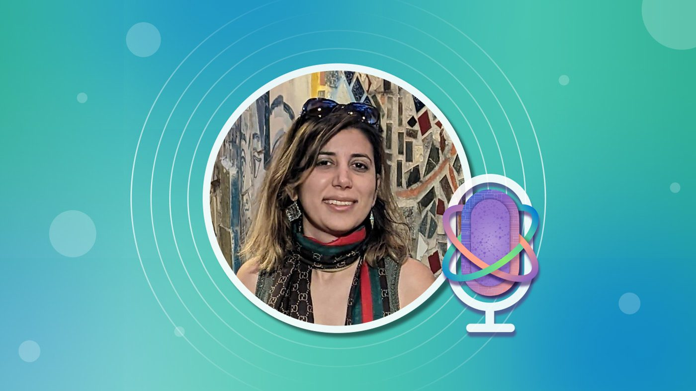
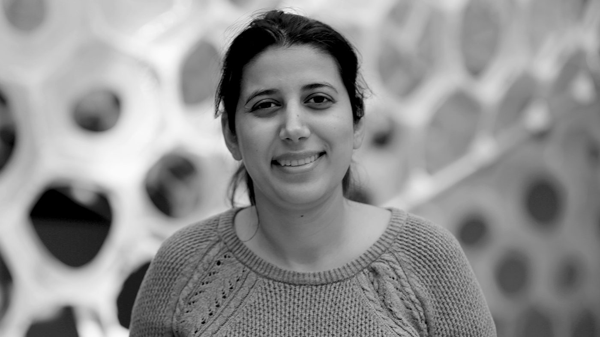

Microsoft Research Podcast
Microsoft Research Podcast
-

Ideas: Solving network management puzzles with Behnaz Arzani
Microsoft Research Podcast · June 13, 2024
-

Auto ML and the future of self-managing networks with Dr. Behnaz Arzani
Microsoft Research Podcast · March 18, 2020
Episode 111 | Dr. Behnaz Arzani is a senior researcher in the Mobility and Networking group at MSR, and she feels your pain. At least, that is, if you’re a network operator trying to troubleshoot an incident in a datacenter. Her research is all about getting networks to manage themselves, so your life is as pain-free as possible.